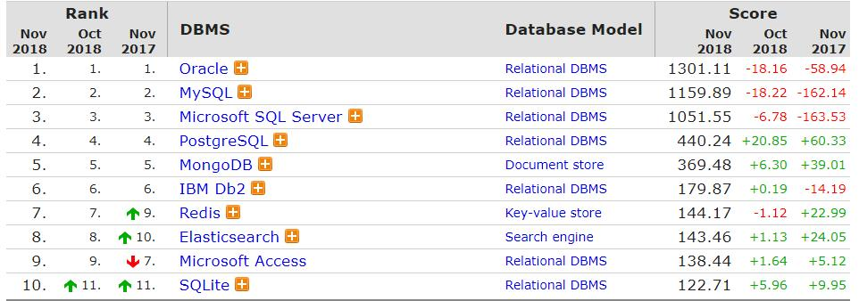
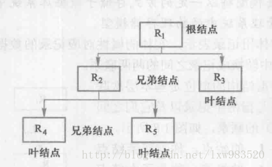
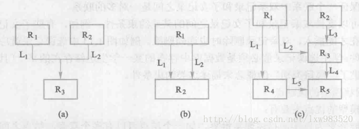
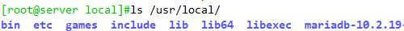
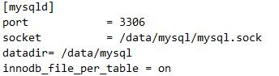
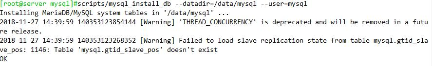
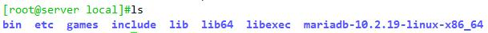
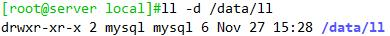
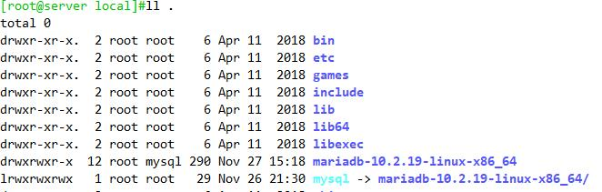

数据库（database）：一个以某种有组织的方式存储的数据集合，保存有组织的数据的容器（通常是一个文件或一组文件
数据库管理系统（DBMS：database message system）：数据库是通过DBMS创建和操作的容器

[数据库排名]https://db-engines.com/en/ranking
比较流行的数据库分为以下几种：
Relational DBMS：如Oracle，MySQL/MariaDB，SQL Server，DB2。
Document Store：如MongoDB，Amazon DynamoDB。
Key-Value Store：如Redis。
Search Engine：如Elasticsearch。
数据结构模型：
层次模型
在层次模型中，每个结点表示一个记录类型，记录类型之间的联系用结点之间的连线表示，这种是1:n的联系

网状结构
用有向图表示实体和实体之间的联系的数据结构模型称为网状数据模型。是一种m:n的关系

关系模型
用二维表的形式表示实体和实体间联系的数据模型
关系型数据库
关系：关系就是二维表
行：表中的每一行，称为记录
列：表中每一列，称为字段
主键：用于惟一确定一个记录的字段
域：属性的取值范围
实体（行）完整性 Entity integrity
域（列）完整性 Domain Integrity
参考完整性 Referential Integrity
RDMBS设计范式基础概念
1NF：无重复的列，每一列都是不可分割的基本数据项，同一列中不能有多个值，
说明：第一范式（1NF）是对关系模式的基本要求，不满足第一范式（1NF）的数据库就不是关系数据库
2NF：属性完全依赖于主键，第二范式必须先满足第一范式，要求表中的每个行必须可以被唯一区分。通常为表加上一个列，以存储各个实例的唯一标识PK，非PK的字段需要与整个PK有直接相关性
3NF：属性不依赖于其它非主属性，满足第三范式必须先满足第二范式。第三范式要求一个数据库表中不包含已在其它表中已包含的非主关键字信息，非PK的字段间不能有从属关系
关系型数据库的常见组件：
数据库：database
表：table
行：row
列：column
索引：index
视图：view
用户：user
权限：privilege
存储过程：procedure
存储函数：function
触发器：trigger
事件调度器：event scheduler
SQL: Structure Query Language
结构化查询语言
数据存储协议：应用层协议，C/S
S：server, 监听于套拼字，接收并处理客户端的应用请求；
C：Client
程序接口
CLI
GUI
约束关系：
主键（Primary key）：一个或多个字段的组合，数据必须能在本表中唯一标识本行；不能为空，即NOT NULL; 一个表只能存在一个
惟一键（unique key）：一个或多个字段的组合，必须能在本表中唯一标识本行；允许为NULL；一个表可以存在多个
外键（FOREIGN KEY）：一个表中的某字段可填入数据取决于另一个表的主键已有的数据；
索引：将表中的一个或多个字段中的数据复制一份另存，并且此些需要按特定次序排序存储；
关系运算：
选择，挑选出符合条件的行
投影，挑选出需要的字段
连接，表间字段的关联
MySQL和MariaDB
官方网址：
官方文档
版本演变：
MySQL：5.1 –> 5.5 –> 5.6 –> 5.7
MariaDB：5.5 –>10.0–> 10.1 –> 10.2 –> 10.3
MariaDB数据库管理系统是MySQL的一个分支，主要由开源社区在维护，采用GPL授权许可MariaDB的目的是完全兼容MySQL，包括API和命令行，使之能轻松成为MySQL的代替品。
MariaDB由MySQL的创始人Michael Widenius（英语：Michael Widenius）主导开发，他早前曾以10亿美元的价格，将自己创建的公司MySQL AB卖给了SUN,此后，随着SUN被甲骨文收购，MySQL的所有权也落入Oracle的手中。MariaDB名称来自Michael Widenius的女儿Maria的名字。
安装mariadb
CentOS 7直接提供
1.源代码：编译安装
2.二进制格式的程序包：展开至特定路径，并经过简单配置后即可使用
3.程序包管理管理的程序包
MariaDB的特性：
插件式存储引擎：存储管理器有多种实现版本，功能和特性可能均略有差别；用户可根据需要灵活选择；Mysql5.5.5开始innoDB引擎是MYSQL默认引擎
存储引擎也称之为“表类型”；
(1) 更多的存储的存储引擎
MyISAM --> Aria,
InnoDB --> XtraDB
(2) 诸多扩展和新特性
(3) 单进程，多线程
1 | #centos 7 |
源码编译安装
1. 安装编译需要的包
yum install bison bison-devel zlib-devel libcurl-devel libarchive-devel boostdevel gcc gcc-c++ cmake ncurses-devel gnutls-devel libxml2-devel openssldevel libevent-devel libaio-devel
2. 添加用户
useradd -r mysql -s /sbin/nologin -g mysql
3.创建数据库路径
mkdir -pv /data/mysql #建议在逻辑卷
chown mysql.mysql /data/mysql
4.解压缩源码包
tar xf mariadb-10.2.19.tar -C /usr/local

5.编译安装
编译选项https://dev.mysql.com/doc/refman/5.7/en/source-configuration-options.html
cd mariadb-10.2.19/
cmake. \
-DCMAKE_INSTALL_PREFIX=/usr/local/mysql \
-DMYSQL_DATADIR=/data/mysql/
-DSYSCONFDIR=/etc \
-DMYSQL_USER=mysql \
-DWITH_INNOBASE_STORAGE_ENGINE=1 \
-DWITH_ARCHIVE_STORAGE_ENGINE=1 \
-DWITH_BLACKHOLE_STORAGE_ENGINE=1 \
-DWITH_PARTITION_STORAGE_ENGINE=1 \
-DWITHOUT_MROONGA_STORAGE_ENGINE=1 \
-DWITH_DEBUG=0 \ -DWITH_READLINE=1 \
-DWITH_SSL=system \
-DWITH_ZLIB=system \
-DWITH_LIBWRAP=0 \
-DENABLED_LOCAL_INFILE=1 \
-DMYSQL_UNIX_ADDR=/data/mysql/mysql.sock \
-DDEFAULT_CHARSET=utf8 \
-DDEFAULT_COLLATION=utf8_general_ci
make & make install
6.添加环境变量
echo 'PATH=/usr/local/mysql/bin/:$PATH'> /etc/profile.d/mysql.sh
. /etc/profile.d/mysql.sh

7，修改配置文件
cp /usr/local/mysql/support-files/my-huge.cnf /etc/my.cnf
vim /ect/my.cnf
[mysqld]中添加三个选项：
datadir = /data/mysql
innodb_file_per_table = on
skip_name_resolve = on 禁止主机名解析，建议使用

8.初始化数据库文件
scripts/mysql_install_db --datadir=/data/mysql --user=mysql

9.准备服务脚本，并启动
cp support-files/mysql.server /etc/init.d/mysqld
chkconfig --add mysqld
service mysqld start

10.安全初始化
/user/local/mysql/bin/mysql_secure_installation
二进制安装
1. 准备用户
groupadd -r -g 306 mysql
useradd -r -g 306 -u 306 –s /sbin/nologin mysql
2.解压二进制

3.准备数据目录，建议使用逻辑卷
install -d /data/ll -o mysql -g mysql

4.创建mysql的软链接
ln -sv mariadb-VERSION mysql
chown -R root:mysql /usr/local/mysql/

5. 准备配置文件
cp /usr/local/mysql/support-files/my-huge.cnf /etc/my.cnf
vim /ect/my.cnf
[mysqld]中添加三个选项：
datadir = /data/mysql
innodb_file_per_table = on
skip_name_resolve = on 禁止主机名解析，建议使用
6.添加环境变量
echo 'PATH=/usr/local/mysql/bin/:$PATH'> /etc/profile.d/mysql.sh
. /etc/profile.d/mysql.sh
7.初始化数据库文件
scripts/mysql_install_db --datadir=/data/mysql --user=mysql
8.准备服务脚本，并启动
cp support-files/mysql.server /etc/init.d/mysqld
chkconfig --add mysqld
service mysqld start
9.安全初始化
/user/local/mysql/bin/mysql_secure_installation
安装成功信息
[root@server ~]#mysqladmin --version
mysqladmin Ver 9.1 Distrib 10.2.19-MariaDB, for Linux on x86_64
MySQL配置文件
配置文件：/etc/my.cnf
默认数据库存放路径：/var/lib/mysql
默认启动程序管理器安装的mysql启动时会自动初始化数据库
配置文件采用类似ini风格
可包含以下字符
[mysqld]
character_set_server=utf8mb4，更改服务器创建的数据库的字符集
innodb_file_per_table=on，将表存放的数据分开存放，在mysql 5.5版本中默认是不分开存放
[mysql]
default_character_set=utf8mb4，更改客户端字符集
safe_updates，建议加入客户端选项可避免错误更新表记录
[client]
[server]
[mysql_safe]
[mysqld_multi]
格式：parameter = value
说明：_和- 相同
1，ON，TRUE意义相同， 0，OFF，FALSE意义相同
后面覆盖前面的配置文件，顺序如下：
/etc/my.cnf Global选项
/etc/mysql/my.cnf Global选项
SYSCONFDIR/my.cnf Global选项
$MYSQL_HOME/my.cnf Server-specific 选项
--defaults-extra-file= path
~/.my.cnf User-specific 选项
服务器监听的两种socket地址：
ip socket: 监听在tcp的3306端口，支持远程通信；
vim /etc/my.cnf
[mysqld]
skip-networking=1
关闭网络连接，只侦听本地客户端，所有和服务器的交互都通过一个socketh实现，socket的配置存放在/var/lib/mysql/mysql.sock） 可在/etc/my.cnf修改
unix sock: 监听在sock文件上(/tmp/mysql.sock, /var/lib/mysql/mysql.sock)仅支持本地通信；
server: localhost, 127.0.0.1